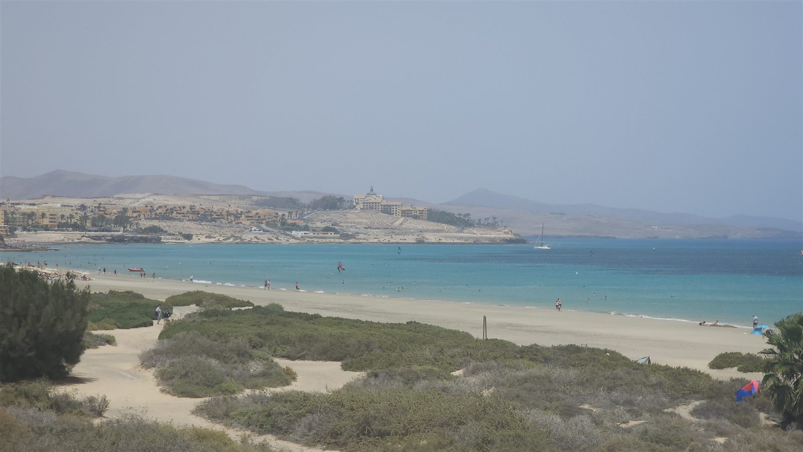
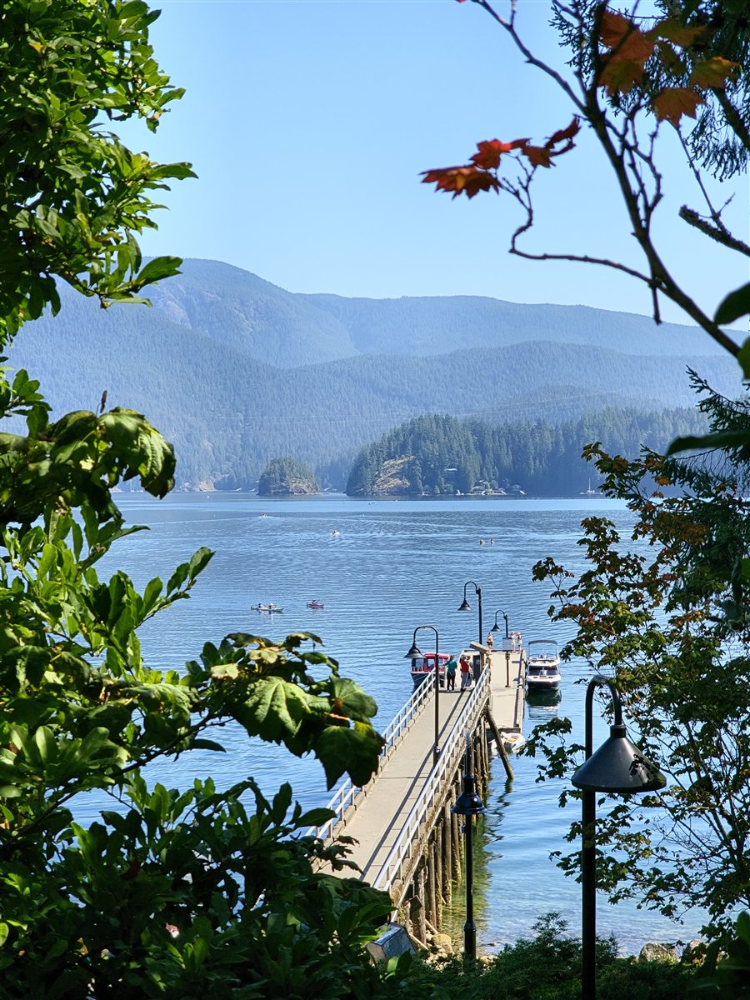
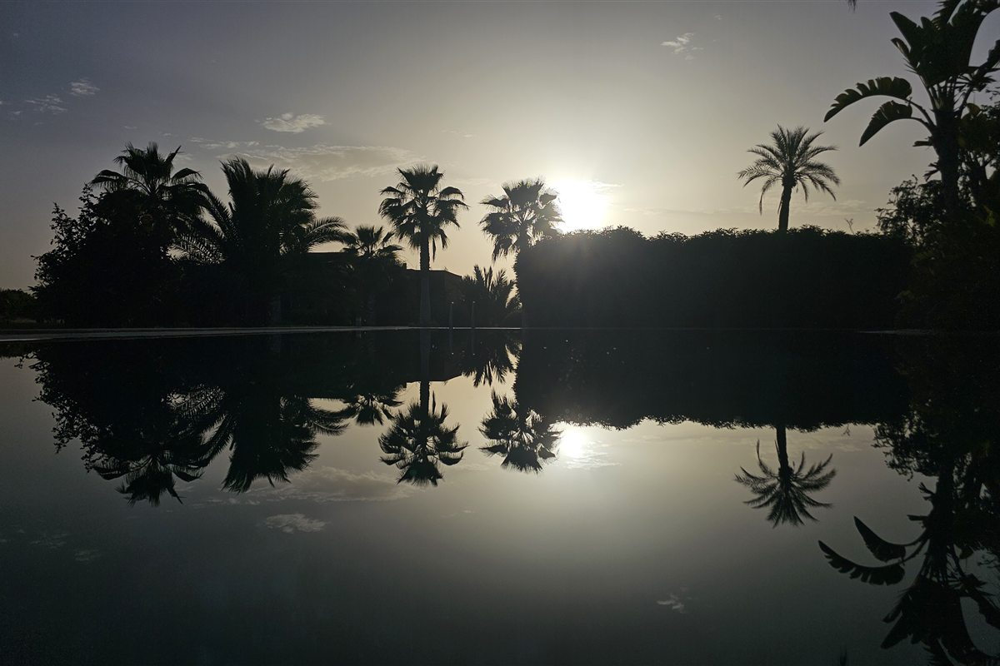

Latest essay
Fuerteventura, silence, and the first wave that stayed.
A solo travel essay about burnout, surf school nerves, and learning how to stop performing for the itinerary.
Majestic Travels is no longer a shop. It is a field journal for solo trips, slow mornings, city overwhelm, surf lessons, and the small moments that make a place stay with you.
New posts are organized by mood, place, and practical use, so readers can find both the story and the plan.
Morro Jable to the first surf lesson, with one long walk back along the Atlantic.
A solo travel essay about burnout, surf school nerves, and learning how to stop performing for the itinerary.
28.05 N / 14.03 W. Windy, volcanic, kinder than expected.
Visitors should know immediately whether they are here for feeling, planning, or a quick spark before their next trip.
Burnout, solitude, courage, awe, and the weirdly specific memory of a street at 7:13 pm.
City routes, seasonal itineraries, packing notes, and local discoveries from lived trips.
Quick reads for places, cafes, beaches, mistakes, small rituals, and what to do differently next time.



Search by place, mood, or practical need. New entries come from Markdown files, so the archive stays tidy while the journal grows.
Showing all entries
Filter by mood, place, or practical need.
Apr 18, 2026
I arrived restless and left quieter. A reflective story about the first wave, the long beach, and the relief of not needing to be impressive.
The emotional anchor of the blog: personal, place-specific, and honest enough to make readers trust the archive.
 Mar 15, 2026
Mar 15, 2026
Rooftop sunsets, overheated sidewalks, late jazz, and the reason a loud city can still make you feel beautifully alone.
A hybrid love letter and practical neighborhood route. Sensory detail first, checklist second.
 Feb 28, 2026
Feb 28, 2026
A grounded field note on beginner nerves, kind instruction, and the strange confidence that appears after falling repeatedly.
Useful because it answers the quiet question: will I look stupid if I try this alone?
 Jan 22, 2026
Jan 22, 2026
A warm, walkable plan for lights, museums, winter food stops, Central Park, and the moments between the obvious sights.
Structure this as morning anchor, afternoon wander, evening payoff, and one flexible backup per day.
 Jan 08, 2026
Jan 08, 2026
Practical, visual, and calm. A post for the reader who is already at the airport and suddenly unsure about plug types.
Keep this old store topic, but make the angle editorial and helpful rather than product-driven.
 Dec 18, 2025
Dec 18, 2025
Less algorithm, more mirror. A reflective quiz that helps readers choose trips by energy, not just destination aesthetics.
Make the quiz feel like a journal prompt with a useful next step.
No matching entries in this notebook yet. Try "NYC", "surf", "packing", or "solo".
Instead of showing every place as an identical tile, this index makes the strongest destination feel like an editorial feature.
Surf lessons, volcanic beaches, solo walks, and the strange quiet that arrives when the island wind finally wins.
Majestic Travels began around travel products, but the honest center was always the feeling underneath: wanting movement to mean something. This new version keeps the useful parts and gives the heart of the project room to breathe.
The blog is built for readers who want practical travel help without losing the human story. Every post should answer two questions: what happened there, and how can a reader make their own version of it?